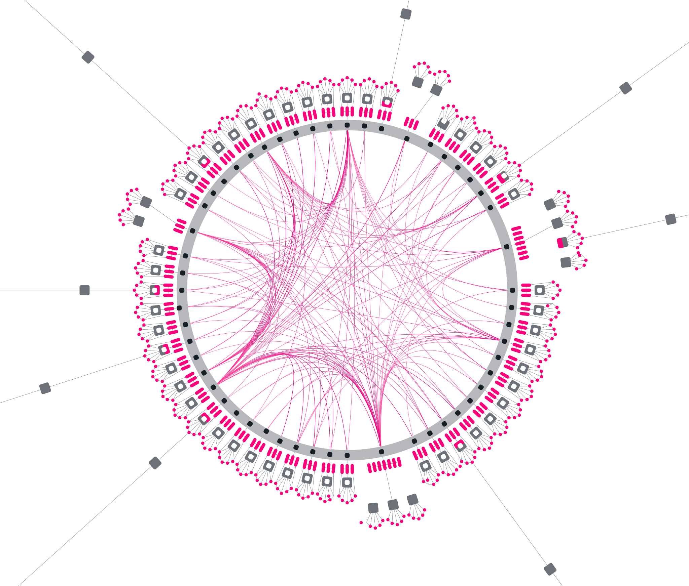

<!DOCTYPE html>
<html lang="en">

<head>
  <meta charset="utf-8" />
  <meta name="viewport" content="width=device-width, initial-scale=1.0, maximum-scale=1.0, user-scalable=no" />

  <title>What is Parachains Consenus?</title>
  <link rel="icon" href="./../../assets/favicon.svg" />
  <link rel="shortcut icon" href="./../../assets/favicon.png" />
  <link rel="stylesheet" href="./../../dist/reset.css" />
  <link rel="stylesheet" href="./../../dist/reveal.css" />
  <link rel="stylesheet" href="./../.././assets/styles/PBA-theme.css" id="theme" />
  <link rel="stylesheet" href="./../../css/highlight/shades-of-purple.css" />

  <link rel="stylesheet" href="./../.././assets/styles/custom-classes.css" />

</head>

<body class="site">
  <header class="site-header">
    <!-- This logo is a link only on the watching server, not the production build -->
    <a href="">
      
    </a>
  </header>
  <main class="reveal">
    <article class="slides">
      <section ><section data-markdown><script type="text/template">

# Polkadot

<aside class="notes"><p>Introduction</p>
</aside></script></section><section data-markdown><script type="text/template">
# Polkadot
## Core Tenets (In My Opinion)

- Polkadot is a decentralized open-source community

- [...]

- [...]

<aside class="notes"><p>Before we jump into the main topic let me make a few comments on what I believe are the core tenets of Polkadot. The first one is that</p>
<p>Polkadot is a decentralized open-source community. Hopefully at this point you got somewhat convinced about this one. Sitting here in the PBA which is funded by the biggest DAO in the digital world. And I&#39;m sure the Governance module also reinforced that idea.</p>
</aside></script></section><section data-markdown><script type="text/template">
# Polkadot
## Core Tenets (In My Opinion)

- Polkadot is a decentralized open-source community

- Polkadot is a permissionless and ubiquitous computer

- [...]

<aside class="notes"><p>Polkadot is a permissionless and ubiquitous computer. The key pieces to this were supplied by the customizable and programmable substrate/frame chains so something you got to experience in details over the last few weeks. They are fully adjustable state transition machines that can be deployed online.</p>
</aside></script></section><section data-markdown><script type="text/template">
# Polkadot
## Core Tenets (In My Opinion)

- Polkadot is a decentralized open-source community

- Polkadot is a permissionless and ubiquitous computer

- Polkadot is a scalable, heterogeneous, sharded, multi-chain network

<aside class="notes"><p>The goal of the next 2 days will be understanding how we achieve that last tenet. Understanding how Polkadot scales, manages its heterogeneity, shards and connects all those chains into a single network.
And to succeed in that mission Let&#39;s dive into the main topic for today - Parachain Consensus.</p>
</aside></script></section></section><section  data-markdown><script type="text/template">
# What is Parachains Consensus?


<aside class="notes"><p>We will be looking at what is parachain consensus?</p>
</aside></script></section><section  data-markdown><script type="text/template">
# Three Pillars of Polkadot



<aside class="notes"><p>Game analogy. NPoS decides who plays the game, parachain consensus are the rules of the game. Governance helps us evolve the game over time so it&#39;s never stale and keeps up with the times.</p>
</aside></script></section><section  data-markdown><script type="text/template">
# Polkadot Relay Chain

NPoS, Parachains Consensus and Gov all live on the **Relay Chain**

<aside class="notes"><p>For now you can think of the Polkadot Relay Chain as normal blockchain and we will slowly build it up uncovering what it truly does</p>
</aside></script></section><section ><section data-markdown><script type="text/template">
# NPoS

<aside class="notes"><p>The first pillar worth exploring is NPoS. It is tightly connected to a frame pallet called staking that lives in the relay chain runtime</p>
</aside></script></section><section data-markdown><script type="text/template">
# NPoS
## What's the goal of this pillar?

We need to fairly elect a bounded number of players (validators) that will participate in the game (parachain consensus).

<aside class="notes"><p>So what&#39;s the goal of this pillar? Player election!</p>
</aside></script></section><section data-markdown><script type="text/template">
# NPoS
## NPoS Elections

- Every 24h (era) an algorithmic election is held and a set of 300 validators is chosen - they will be the **active validator set**.
- Active set of validators is backed by ~50% of the total DOT supply
- The stake is evenly distributed between the active validators so they all have equal voting power in the upcoming game

<aside class="notes"><p>There&#39;s no better way than to vote with your wallet and NPoS is all about this idea.</p>
</aside></script></section><section data-markdown><script type="text/template">
# NPoS
## NPoS Nominations

- Most validator don't own the stake they use for the elections and they simply focus on being a validator-as-a-service operators
- The stake used by those validators is provided by other tokens holders not willing to go through the trouble of owning a full-node on your own hardware
- Those tokens holders **nominate** the validator essentially entrusting their own tokens to the validator to share parts of the profits, but they also share the dangers

<aside class="notes"><p>Picking the best nominators and validators is actually an NP-hard problem! Same as the knapsack problem. There is a clever scheme to try and solve it on chain for those interested read more here: <link>
If you all will be more interested in the topics and there will be time we might do a short in-depth dive into NPoS and Phragmen elections.</p>
</aside></script></section></section><section ><section data-markdown><script type="text/template">
# Parachain Consensus

<aside class="notes"><p>But for now let&#39;s move to the Parachain Consensus. This is the heart of the relay chain that distinguishes it from other blockchains. This is the secret sauce.</p>
</aside></script></section><section data-markdown><script type="text/template">
# Parachain Consensus
## What's the goal?


<aside class="notes"><p>What&#39;s the goal? What does it try to accomplish? Well it&#39;s blockchain and there&#39;s one thing we really, really want to see in blockchains.</p>
</aside></script></section><section data-markdown><script type="text/template">

# Parachain Consensus
## What's the goal?

- Scalability

<aside class="notes"></aside></script></section><section data-markdown><script type="text/template">

# Parachain Consensus
## What's the goal?

- Scalability
- Scalability

<aside class="notes"></aside></script></section><section data-markdown><script type="text/template">
# Parachain Consensus
## What's the goal?

- Scalability
- Scalability
- Scalability

<aside class="notes"><p>And security and decentralization but we&#39;ll dive into those on future lectures.
Okay, so how does it achieve scalability? You all have been learning about substrate and frame and building your own little chains. And it is true that Polkadot&#39;s Relay Chain is a also a Substrate-based chain but there&#39;s more to it. It&#39;s a substrate chain capable of aggregating the state of other substrate chains and thus sharing it&#39;s own security with them. Parachain Consensus is what validates all those other blockchains and makes them unite in the relay chain. This is what we call sharding.</p>
</aside></script></section><section data-markdown><script type="text/template">
# Parachain Consensus
## What's the goal?

**Sharding**

Sharding crucially allows us to parallelize execution. 

<aside class="notes"><p>Sharding crucially allows us to parallelize execution. All those sovereign substrate blockchains can connect to the relay chain and entrust it with validation duties, while the chain itself can focus on the business logic and functionality. So all those little blockchains connected to the relay chain are called parachains. But actually does anyone know where this name comes from? ...</p>
<p>But let&#39;s zoom out for a second.</p>
</aside></script></section><section data-markdown><script type="text/template">
# Parachain Consensus
## Zooming out



<aside class="notes"><p>This is how Polkadot&#39;s relay chain and it&#39;s parachains can be visualized. This is just a single relay chain block slice. All those little blocks around the large circle are parachain blocks - parablocks. What I want you to take away from this picture is that Polkadot is a fundamentally just like a mothership for all those little parachains. And if they are fully capable and sovereign chains, then this makes Polkadot a layer 0 solution.</p>
</aside></script></section><section data-markdown><script type="text/template">

# Parachain Consensus
## Zooming out

Polkadot is a layer 0 protocol

<aside class="notes"><p>Polkadot a layer 0 blockchain. A blockchain of blockchains, a platform for other platforms to build and flourish. </p>
<p>And also Polkadot being a layer 0 is why I often think that a truly widely adopted and successful Polkadot does not mean people recognize the name, it means you recognize the project building on top of Polkadot. Marketing Polkadot is nice but I strongly believe that end consumers don&#39;t need to know about it just like AWS doesn&#39;t advertise to the mom and pops, they target builders.</p>
</aside></script></section><section data-markdown><script type="text/template">
# Parachain Consensus
## Why do we learn it?

To fully utilize what Polkadot offers you need to learn its quirks.

<aside class="notes"><p>And I hope that this also makes it clearer why we will be learning those more in-depth core protocol elements. Because if you all are the next generation of builders then only if you understand what Polkadot truly offers, what are its strengths and weaknesses you will be able to build the next application that truly uses it&#39;s potential to the fullest. Because there are things that you can only build on Polkadot and nowhere else.</p>
<p>So now that the why is covered let&#39;s look at how it all comes together. There is a lot of moving parts in the parachains consensus but let&#39;s start familiarizing ourselves with them. In the upcoming lectures we will be diving deeper into each individual step so don&#39;t worry if you miss something.</p>
</aside></script></section><section data-markdown><script type="text/template">
# Parachain Consensus
## The Game

<div style="font-size: 0.8em">

<pba-flex left>

**Primary Goal:**

- Grow registered parachains and post only valid updates to the Relay Chain

</pba-flex>

<aside class="notes"></aside></script></section><section data-markdown><script type="text/template">
# Parachain Consensus
## The Game

<div style="font-size: 0.8em">

<pba-flex left>

**Primary Goal:**

- Grow registered parachains and post only valid updates to the Relay Chain

</pba-flex>

<pba-flex left>

**Rules:**

</pba-flex>

- Validators are incentivized to attest to new parachain blocks
- Whichever Validator makes the next Relay Chain block includes some attested parachain blocks
- Validators are slashed if they attest to incorrect parachain blocks
  - incorrect means "not according to the parachain's Wasm code"
- Validators check each others' work to initiate the slashing procedure

</div>

<br/>
</script></section><section data-markdown><script type="text/template">
# Parachain Consensus
## The Game

<div style="font-size: 0.8em">

<pba-flex left>

**Primary Goal:**

- Grow registered parachains and post only valid updates to the Relay Chain

</pba-flex>

<pba-flex left>

**Rules:**

</pba-flex>

- Validators are incentivized to attest to new parachain blocks
- Whichever Validator makes the next Relay Chain block includes some attested parachain blocks
- Validators are slashed if they attest to incorrect parachain blocks
  - incorrect means "not according to the parachain's Wasm code"
- Validators check each others' work to initiate the slashing procedure

</div>

<br/>


**The game works whenever <1/3 of validators misbehave.**
</script></section><section data-markdown><script type="text/template">
# Parachain Consensus
## Overview

<aside class="notes"><p>Those were the simplified rules of the game but those rules will be encompassed by specific sub-protocols within Polkadot and lets take a loot at them now.</p>
</aside></script></section><section data-markdown><script type="text/template">
# Parachain Consensus
## Overview

- Assignment: Group up validators.

<aside class="notes"><p>Initially we&#39;ll be grouping up and assigning the validators in the active set, those are the ones that NPoS gives us.</p>
</aside></script></section><section data-markdown><script type="text/template">
# Parachain Consensus
## Overview

- Assignment: Group up validators.
- Collation: Collect transactions.

<aside class="notes"><p>Some other nodes will collect the user transactions and create collations.</p>
</aside></script></section><section data-markdown><script type="text/template">
# Parachain Consensus
## Overview

- Assignment: Group up validators.
- Collation: Collect transactions.
- Backing: Assign responsibility.

<aside class="notes"><p>Some validators will receive those collations and if they think they are correct they will vouch for them. Take on the responsibility for them.</p>
</aside></script></section><section data-markdown><script type="text/template">
# Parachain Consensus
## Overview

- Assignment: Group up validators.
- Collation: Collect transactions.
- Backing: Assign responsibility.
- Availability: Distribute data.

<aside class="notes"><p>All the data connected to the collation is distributed between the validators in a compressed form.</p>
</aside></script></section><section data-markdown><script type="text/template">
# Parachain Consensus
## Overview

- Assignment: Group up validators.
- Collation: Collect transactions.
- Backing: Assign responsibility.
- Availability: Distribute data.
- Approval Checking: Verify correctness.

<aside class="notes"><p>Validators perform the final correctness checks</p>
</aside></script></section><section data-markdown><script type="text/template">
# Parachain Consensus
## Overview

- Assignment: Group up validators.
- Collation: Collect transactions.
- Backing: Assign responsibility.
- Availability: Distribute data.
- Approval Checking: Verify correctness.
- Disputes: Resolve escalations.

<aside class="notes"><p>And if something doesn&#39;t feel right they start an official dispute. Think of it as starting the alarm bells and calling in for help.</p>
</aside></script></section><section data-markdown><script type="text/template">
# Parachain Consensus
## Overview

- Assignment: Group up validators.
- Collation: Collect transactions.
- Backing: Assign responsibility.
- Availability: Distribute data.
- Approval Checking: Verify correctness.
- Disputes: Resolve escalations.
- Finality: Solidify state.

<aside class="notes"><p>But if everything went smoothly the verified collations will get finalized by GRANDPA</p>
</aside></script></section></section><section ><section data-markdown><script type="text/template">
# Governance

<aside class="notes"><p>Up to this point maybe it wasn&#39;t clear but there are a lot of number that seem pretty arbitrary. For instance remember that the active validator set was 300? Why not 350? Who decided that? And most importantly who can change it? In Polkadot that&#39;s the token holders!</p>
</aside></script></section><section data-markdown><script type="text/template">
# Governance
## OpenGov

Polkadot has on-chain governance by stakeholder referendum, voting on subjects such as:

<pba-flex center>

- Forkless upgrades of the network
- Administration of the Treasury funds
- Configuration of the Parachains protocol
- Configuration of fees
- Rescue & recovery operations
- All other mechanisms of control over the platform

</pba-flex>

<aside class="notes"><p>Token holders can vote and adjust the parameters of the protocol. Everything like the number of validators to the minimum staking, existential deposit etc can be adjusted. So The parachain consensus, this have played by the validators can adapt if it needs it. And even more importantly because the Relay Chain itself uses a runtime architecture we can even issue governance enable runtime upgrades of the relay chain to expand upon it even further. This is a bit of a double-edged sword since not all change is good change.</p>
<p><a href="https://polkadot.network/features/opengov/">https://polkadot.network/features/opengov/</a></p>
</aside></script></section></section><section ><section data-markdown><script type="text/template">
# JAM
## Polkadot 2.0

<aside class="notes"><p>Who here has heard of JAM?</p>
</aside></script></section><section data-markdown><script type="text/template">
# JAM
## Polkadot 2.0

JAM is a further generalization and abstraction of Polkadot.

That means that whatever Parachain Consensus does will still be very relevant in JAM as it will adopt many of it's features.

<aside class="notes"><p>JAM was a recently proposed potential next step for the Polkadot Network. Generally think of it as a generalization of the protocol. JAM can do everything the current Polkadot Relay Chain can and more. In general it is still an extremely fresh idea so we will not be covering in depth in the core lectures but you can expect some more information about later this week.</p>
<p>And I can also guarantee you one thing, many of the steps in parachain consensus like approval checking and disputes will be recreated and ported to JAM, so understanding them now gives you an awesome headstart to understanding what JAM truly aims to achieve.</p>
</aside></script></section></section>
    </article>
  </main>

  <script src="./../../dist/reveal.js"></script>

  <script src="./../../plugin/markdown/markdown.js"></script>
  <script src="./../../plugin/highlight/highlight.js"></script>
  <script src="./../../plugin/zoom/zoom.js"></script>
  <script src="./../../plugin/notes/notes.js"></script>
  <script src="./../../plugin/math/math.js"></script>

  <script src="./../../assets/plugin/mermaid.js"></script>
  <script src="./../../assets/plugin/mermaid-theme.js"></script>

  <script src="./../../assets/plugin/chart/chart.js"></script>
  <script src="./../../assets/plugin/chart/chart.min.js"></script>

  <script src="./../../assets/plugin/tailwindcss.min.js"></script>

  <script>
    function extend() {
      var target = {};
      for (var i = 0; i < arguments.length; i++) {
        var source = arguments[i];
        for (var key in source) {
          if (source.hasOwnProperty(key)) {
            target[key] = source[key];
          }
        }
      }
      return target;
    }

    // default options to init reveal.js
    var defaultOptions = {
      controls: true,
      progress: true,
      history: true,
      center: true,
      transition: 'default', // none/fade/slide/convex/concave/zoom
      slideNumber: true,
      mermaid: {
        startOnLoad: false,
        logLevel: 3,
        theme: 'base',
        themeVariables: {
          primaryColor: purple,
          primaryTextColor: white,
          primaryBorderColor: pink,
          lineColor: pink,
          secondaryColor: lightPurple,
          tertiaryColor: lightPurple,
        },
      },
      chart: {
        defaults: {
          color: 'lightgray', // color of labels
          scale: {
            beginAtZero: true,
            ticks: { stepSize: 1 },
            grid: { color: "lightgray" }, // color of grid lines
          },
        },
        line: { borderColor: ["#ccc", "#E6007A", "#6D3AEE"], "borderDash": [[5, 10], [0, 0]] },
        bar: { backgroundColor: ["#ccc", "#E6007A", "#6D3AEE"] },
      },
      plugins: [
        RevealMarkdown,
        RevealHighlight,
        RevealZoom,
        RevealNotes,
        RevealMath,
        RevealMermaid,
        RevealChart
      ]
    };

    // options from URL query string
    var queryOptions = Reveal().getQueryHash() || {};

    var options = extend(defaultOptions, {"width":1400,"height":900,"margin":0,"minScale":0.2,"maxScale":2,"transition":"none","controls":true,"progress":true,"center":true,"slideNumber":true,"backgroundTransition":"fade"}, queryOptions);
  </script>


  <script>
    Reveal.initialize(options);
  </script>
</body>

</html>
